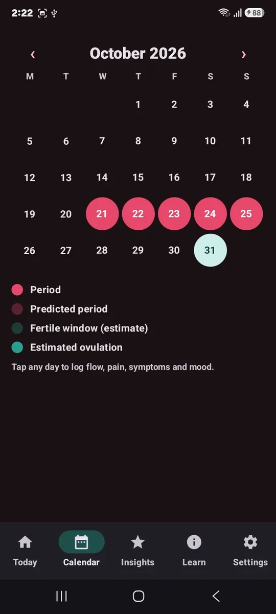
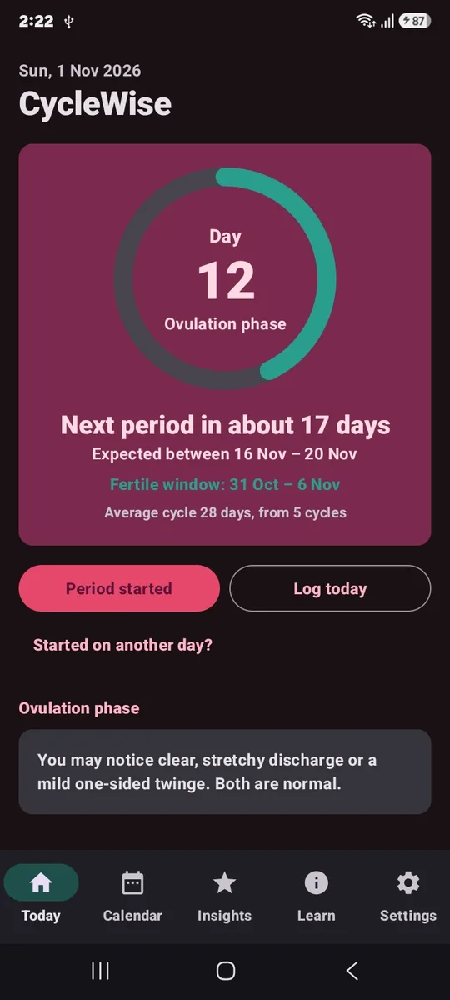
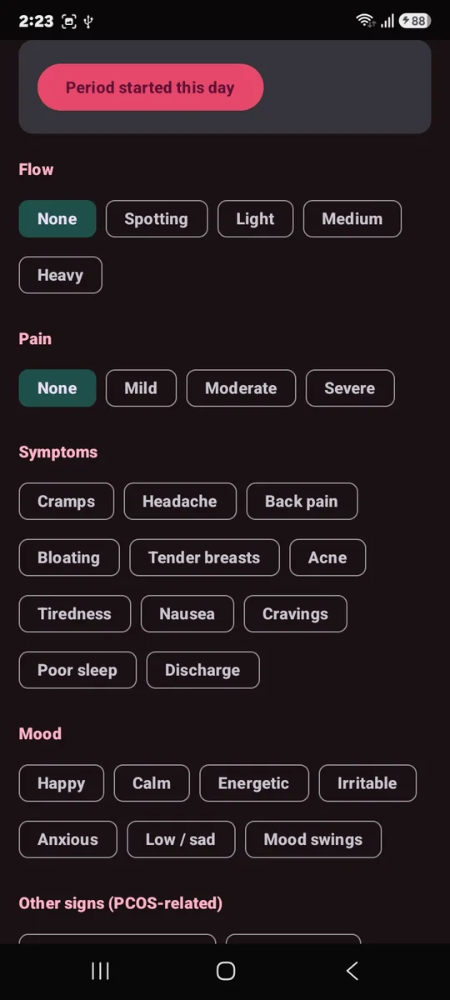
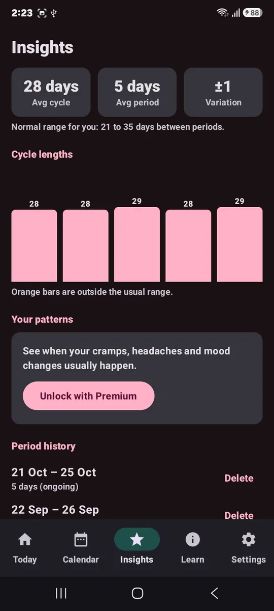
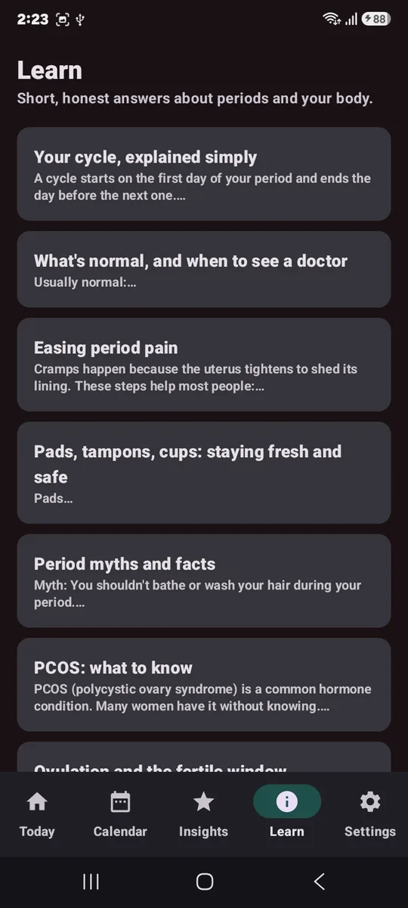

🌱
Teen mode
Choose "Under 18" for age-appropriate content without fertility features.
Period tracker · English and Hindi
CycleWise learns your pattern, shows when your next period and fertile window are likely, and tells you when something is worth asking a doctor about. No account. No ads. Your data stays on your phone.


See which day of your cycle you are on, when your next period is expected, and your fertile window. Tap once when your period starts or ends.

Tap any day on the calendar to log flow, pain, symptoms, mood and a private note. It takes seconds.

Your average cycle and period length, how much they vary, and a chart that highlights any cycle outside the usual range.

Clear reads about periods and your body, written simply in English and Hindi. No shame, no myths.
Choose "Under 18" for age-appropriate content without fertility features.
Turn on fertile window and ovulation estimates any time in Settings.
A heads-up before your period so your kit is ready, with a discreet option.
Switch language any time, right inside the app.
A one-page PDF of your cycles, symptoms and PCOS signs to show your gynaecologist.
Keep the app locked so only you can open it.
Show the app on your home screen as a plain "My Calendar" icon.
Save a backup file and bring your history to a new phone.
Every normal range, health alert and article in CycleWise follows published guidelines and research. The full list is inside the app.
Period data is personal. CycleWise keeps it that way.
CycleWise is an independent project from India. We have no investors to answer to and no business in selling data.
Developer
B.A. and M.A. in Economics. Designed CycleWise around what women and girls actually need from a period app.
Developer and researcher
PhD scholar in Electrical Engineering at IIT Kharagpur. Built the prediction logic and checked it against clinical guidelines.
Yes. Logging, predictions, reminders, health alerts and all Learn articles are free. An optional Premium adds extras such as the doctor report, symptom patterns and the hidden icon. There are no ads in either version.
Only on your phone. The app has no internet permission, so it cannot send your data anywhere, and we have no server that could receive it. Nobody, including us, can see your cycle.
Save a backup file from Settings and keep it wherever you like, such as Google Drive or email. On the new phone, restore it in CycleWise.
No to both. CycleWise gives general information based on clinical guidelines and tells you when something is worth checking with a doctor. It does not diagnose, and its fertile-window estimates must not be used as contraception.
Yes. Teen mode uses the normal cycle range for adolescents, hides fertility features, and adds a first-period guide and school tips. No account, email or phone number is needed.
CycleWise is in final testing. Star the project on GitHub to follow the launch.
Follow on GitHub